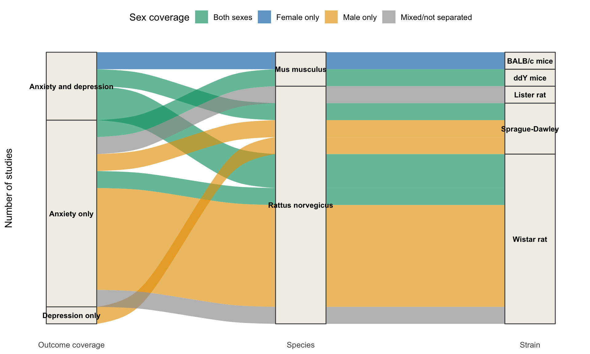
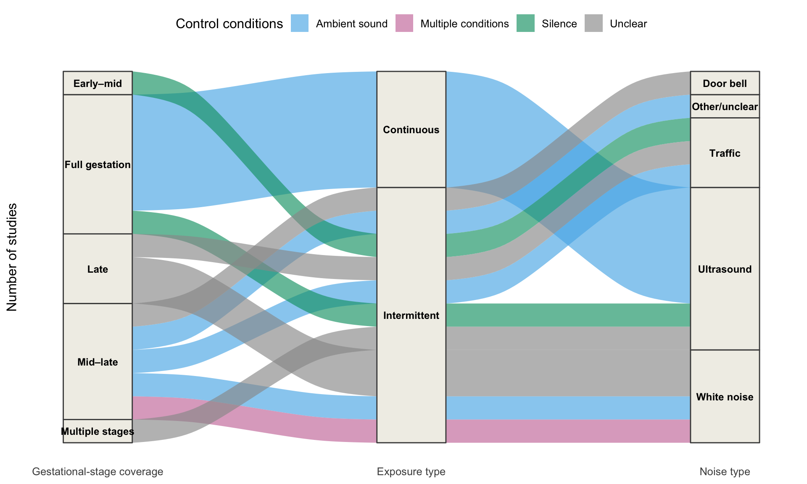

# Combine the distinct values reported within each study.
combine_values <- function(x) {
x <- trimws(as.character(x))
x <- x[!is.na(x) & x != ""]
paste(sort(unique(x)), collapse = "|")
}
study_data <- db |>
dplyr::group_by(study_id) |>
dplyr::summarise(
outcome_values = combine_values(outcome_type),
species = combine_values(sp_latin),
strain = combine_values(strain),
sex_values = combine_values(offspring_sex),
gestational_stage_values = combine_values(
gest_stage_ex_standardised
),
exposure_type = combine_values(exposure_type),
noise_type = combine_values(noise_type),
control_values = combine_values(control_conditions),
.groups = "drop"
) |>
dplyr::mutate(
outcome_coverage = dplyr::case_when(
outcome_values == "anxiety" ~ "Anxiety only",
outcome_values == "depression" ~ "Depression only",
outcome_values == "anxiety|depression" ~ "Anxiety and depression",
TRUE ~ "Multiple outcome categories"
),
sex_coverage = dplyr::case_when(
sex_values == "male" ~ "Male only",
sex_values == "female" ~ "Female only",
sex_values == "female|male" ~ "Both sexes",
sex_values == "mixed" ~ "Mixed/not separated",
TRUE ~ "Multiple sex categories"
),
gestational_stage_coverage = dplyr::case_when(
stringr::str_detect(gestational_stage_values, "\\|") ~
"Multiple stages",
gestational_stage_values == "early_mid" ~ "Early–mid",
gestational_stage_values == "full_gestation" ~ "Full gestation",
gestational_stage_values == "mid_late" ~ "Mid–late",
gestational_stage_values == "late" ~ "Late",
TRUE ~ "Not reported"
),
exposure_type = stringr::str_to_sentence(exposure_type),
noise_type = stringr::str_to_sentence(noise_type),
control_coverage = dplyr::case_when(
stringr::str_detect(control_values, "\\|") ~
"Multiple conditions",
control_values == "ambient_sound" ~ "Ambient sound",
control_values == "silence" ~ "Silence",
control_values == "unclear" ~ "Unclear",
TRUE ~ "Not reported"
)
)
if (nrow(study_data) != dplyr::n_distinct(db$study_id)) {
stop("The study-level database must contain one row per study_id.")
}Alluvial plots
We use study-level alluvial plots to summarize the composition of the evidence base. Each study contributes a total width of one, regardless of how many effect sizes it reports. When a study reports more than one value for a characteristic, we combine those values into a study-level coverage category.
Study-level categories
We first reduce the effect-size database to one row per study. The derived coverage variables retain whether a study reports one or several outcome types, offspring sexes, gestational exposure stages, or control conditions.
Study subjects and outcome coverage
The first plot connects study-level outcome coverage, species, and strain. Ribbon colour represents the offspring sexes reported by each study.
# Count studies that follow the same path through the plot.
subject_flows <- study_data |>
dplyr::count(
outcome_coverage,
species,
strain,
sex_coverage,
name = "Studies"
)
sex_colours <- c(
"Male only" = "#E69F00",
"Female only" = "#0072B2",
"Both sexes" = "#009E73",
"Mixed/not separated" = "#999999",
"Multiple sex categories" = "#CC79A7"
)
study_subjects_plot <- ggplot2::ggplot(
subject_flows,
ggplot2::aes(
y = Studies,
axis1 = outcome_coverage,
axis2 = species,
axis3 = strain
)
) +
ggalluvial::geom_alluvium(
ggplot2::aes(fill = sex_coverage),
width = 0.22,
alpha = 0.65
) +
ggalluvial::geom_stratum(
width = 0.22,
fill = "#F1EFE8",
colour = "#4A4A4A"
) +
ggplot2::geom_text(
stat = "stratum",
ggplot2::aes(label = ggplot2::after_stat(stratum)),
size = 3.2,
fontface = "bold"
) +
ggplot2::scale_x_discrete(
limits = c("Outcome coverage", "Species", "Strain"),
expand = c(0.08, 0.08)
) +
ggplot2::scale_fill_manual(
values = sex_colours,
name = "Sex coverage"
) +
ggplot2::labs(x = NULL, y = "Number of studies") +
ggplot2::theme_minimal(base_size = 12) +
ggplot2::theme(
axis.text.y = ggplot2::element_blank(),
axis.ticks.y = ggplot2::element_blank(),
panel.grid = ggplot2::element_blank(),
legend.position = "top"
)
study_subjects_plot
Prenatal-noise exposure design
The second plot connects gestational-stage coverage, exposure type, and noise type. Ribbon colour represents the control conditions reported by each study.
# Count studies that follow the same exposure-design path.
exposure_flows <- study_data |>
dplyr::count(
gestational_stage_coverage,
exposure_type,
noise_type,
control_coverage,
name = "Studies"
)
control_colours <- c(
"Ambient sound" = "#56B4E9",
"Silence" = "#009E73",
"Unclear" = "#999999",
"Multiple conditions" = "#CC79A7",
"Not reported" = "#D9D9D9"
)
exposure_design_plot <- ggplot2::ggplot(
exposure_flows,
ggplot2::aes(
y = Studies,
axis1 = gestational_stage_coverage,
axis2 = exposure_type,
axis3 = noise_type
)
) +
ggalluvial::geom_alluvium(
ggplot2::aes(fill = control_coverage),
width = 0.22,
alpha = 0.65
) +
ggalluvial::geom_stratum(
width = 0.22,
fill = "#F1EFE8",
colour = "#4A4A4A"
) +
ggplot2::geom_text(
stat = "stratum",
ggplot2::aes(label = ggplot2::after_stat(stratum)),
size = 3.2,
fontface = "bold"
) +
ggplot2::scale_x_discrete(
limits = c(
"Gestational-stage coverage",
"Exposure type",
"Noise type"
),
expand = c(0.08, 0.08)
) +
ggplot2::scale_fill_manual(
values = control_colours,
name = "Control conditions"
) +
ggplot2::labs(x = NULL, y = "Number of studies") +
ggplot2::theme_minimal(base_size = 12) +
ggplot2::theme(
axis.text.y = ggplot2::element_blank(),
axis.ticks.y = ggplot2::element_blank(),
panel.grid = ggplot2::element_blank(),
legend.position = "top"
)
exposure_design_plot
NoteSession information
sessionInfo()R version 4.5.1 (2025-06-13)
Platform: aarch64-apple-darwin20
Running under: macOS Tahoe 26.6.2
Matrix products: default
BLAS: /Library/Frameworks/R.framework/Versions/4.5-arm64/Resources/lib/libRblas.0.dylib
LAPACK: /Library/Frameworks/R.framework/Versions/4.5-arm64/Resources/lib/libRlapack.dylib; LAPACK version 3.12.1
locale:
[1] C.UTF-8/C.UTF-8/C.UTF-8/C/C.UTF-8/C.UTF-8
time zone: America/Edmonton
tzcode source: internal
attached base packages:
[1] stats graphics grDevices utils datasets methods base
other attached packages:
[1] tidyr_1.3.2 stringr_1.6.0 readr_2.2.0 ggalluvial_0.12.6
[5] ggplot2_4.0.3 dplyr_1.2.1
loaded via a namespace (and not attached):
[1] bit_4.6.0 gtable_0.3.6 jsonlite_2.0.0 crayon_1.5.3
[5] compiler_4.5.1 tidyselect_1.2.1 parallel_4.5.1 scales_1.4.0
[9] yaml_2.3.12 fastmap_1.2.0 R6_2.6.1 labeling_0.4.3
[13] generics_0.1.4 knitr_1.51 htmlwidgets_1.6.4 tibble_3.3.1
[17] pillar_1.11.1 RColorBrewer_1.1-3 tzdb_0.5.0 rlang_1.3.0
[21] stringi_1.8.9 xfun_0.60 S7_0.2.2 bit64_4.8.2
[25] otel_0.2.0 cli_3.6.6 withr_3.0.3 magrittr_2.0.5
[29] digest_0.6.39 grid_4.5.1 vroom_1.7.1 hms_1.1.4
[33] lifecycle_1.0.5 vctrs_0.7.3 evaluate_1.0.5 glue_1.8.1
[37] farver_2.1.2 purrr_1.2.2 pacman_0.5.1 rmarkdown_2.31
[41] tools_4.5.1 pkgconfig_2.0.3 htmltools_0.5.9